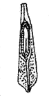
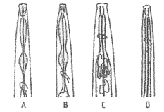

산림산업기사 (2011-08-21 기출문제)
1과목: 조림학
1. 다음 그림은 어떤 수종의 종자인가?

- 전나무
- 플라타너스
- 대추나무
- 가중나무
(정답률: 80%)

2. 다음 중 많이 쓰면 토양이 산성으로 되는 것은?
- 요소
- 황산암모니아
- 석회질소
- 용성인비
(정답률: 65%)
3. 포지에 심한 가뭄이 들어서 관수를 하려고 한다. 가장 적당한 것은?
- 상에 직접 준다.
- 보도 및 우마도에 준다.
- 상과 상 사이에 준다.
- 상에 작은 골을 파고 준다.
(정답률: 70%)
4. 조림지에서 2m 간격의 정사각형 식재를 할 경우 1ha당 필요한 조림 본수는?
- 2500본
- 3500본
- 5000본
- 10000본
(정답률: 85%)
5. 무육작업의 종류로만 조합된 것이 아닌 것은?
- 풀베기, 덩굴치기
- 가지치기, 간벌
- 개벌작업, 파종작업
- 임지시비, 비료목식재
(정답률: 56%)
6. 다음 수종 중 비교적 파종조림이 용이한 수종은?
- 분비나무
- 가래나무
- 전나무
- 단풍나무
(정답률: 60%)
7. 가지를 삽목할 때 발근이 잘되는 수종은?
- 은행나무
- 소나무
- 신갈나무
- 단풍나무
(정답률: 56%)
8. 산림토양의 이화학적 성질에 관한 설명으로 옳은 것은?
- 수목의 생육에는 단립구조보다 입단구조의 토양이 좋은 영향을 준다.
- 양이온치환용량은 모래가 많이 함유된 토양일수록 높아진다.
- 토성의 판별은 토양을 구성하는 자갈, 모래, 점토의 구성비로 결정한다.
- 토양에 퇴비를 많이 넣으면 단립구조의 토양이 잘 형성된다.
(정답률: 75%)
9. 수목의 가시적 양분 진단결과 어린잎 또는 어린 가지에 결핍증상이 나타났다면, 이 수목의 생장을 제한할 가능성이 가장 큰 양분원소는?
- 질소(N)
- 인(P)
- 마그네슘(Mg)
- 칼슘(Ca)
(정답률: 62%)
10. 우리나라 온대 중부지방의 산림에서 숲의 천이가 가장 많이 진행된 것을 알려주는 극상수종은?
- 소나무
- 신갈나무
- 서어나무
- 은행나무
(정답률: 64%)
11. 제벌의 시기로 맞는 것은?
- 식재 후 바로 실시한다.
- 조림목의 수관이 거의 접촉하는 시기에 한다.
- 수시로 한다.
- 간벌 후 한다.
(정답률: 81%)
12. 파종 1개월 전에 노천매장을 하는 것이 좋은 수종들로 짝지어진 것은?
- 잣나무, 가래나무
- 삼나무, 편백
- 은행나무, 주목
- 벚나무, 느티나무
(정답률: 52%)
13. 산림 시업에서 경관 상태와 산림 미학적인 형성에 고려할 사항으로 틀린 것은?
- 등고선 방향 식재보다 경사방향 식재가 바람직하다.
- 야생 조류의 보호를 위해서 초여름에는 가급적 유령 임분의 무육 작업은 피한다.
- 생태적, 보호적, 경제적 관점에서 군상택벌적 취급이 무난하다.
- 조림 시 식재간격을 넓게하여 주림목의 초기생장을 촉진하고 현존식생을 보존하는 것이 바람직하다.
(정답률: 65%)
14. 묘목을 심은 뒤 3~4년간 계속해서 해마다 6월 상순에서 8월 상순 사이에 실시하고, 가문비나무나 전나무 등 어릴 때 자람이 늦은 수종은 5~6년까지 실시해 주어야 하는 산림보육 작업은?
- 시비
- 덩굴치기
- 풀베기
- 가지치기
(정답률: 82%)
15. 수목의 기본구조 중에서 영양기관만으로 짝지어진 것은?
- 종자, 열매, 줄기
- 뿌리, 줄기, 열매
- 잎, 뿌리, 줄기
- 꽃, 열매, 종자
(정답률: 75%)
16. 숲가꾸기 작업을 할 때 미래목의 선정요령 가운데 잘못된 것은?
- 간격은 최소한 4m 이상으로 한다.
- ha당 미래목의 수는 경영 목적이나 목표에 따라서 바뀌지만 대개 1000본을 넘는 것이 일반적이다.
- 임연부의 수목은 미래목으로 선정하지 않는다.
- 맹아보다는 실생묘를 대상으로 선정한다.
(정답률: 56%)
17. 밤, 도토리 등의 저장에 이용되는 저장법은?
- 밀봉저장
- 실온저장
- 보호저장
- 노천매장
(정답률: 58%)
18. 산림토양이 농업토양과 다른 점은?
- 토양내 미생물의 종류가 단순하다.
- 인공적으로 토양조건을 변화시키는 경우가 많다.
- 임지에는 순수한 유기물층이 있다.
- 유기물의 함량은 토심이 깊어질수록 증가한다.
(정답률: 58%)
19. 침엽수류의 줄기에서 대부분의 수분 이동을 담당하는 통로가 되는 주요 세포는?
- 도관
- 후막세포
- 표피세포
- 가도관
(정답률: 80%)
20. 수종에 따라 식재시기 순서를 가려 조림할 필요가 있다. 다음 식재시기가 빠른 순서가 가장 좋은 것은?
- 낙엽수-상록침엽수-상록활엽수
- 상록침엽수-상록활엽수-낙엽수
- 상록활엽수-낙엽수-상록침엽수
- 상록활엽수-상록침엽수-낙엽수
(정답률: 53%)
2과목: 산림보호학
21. 감수체(Suscept)란?
- 병에 걸릴 수 있는 상태의 식물
- 병에 이미 걸린 식물
- 병에 걸렸으나 견디어 내는 식물
- 병에 걸릴 가능성이 없는 식물
(정답률: 79%)
22. 주제의 성질이 지용성으로 물에 녹지 않을 때 유기용매에 녹여 유화제를 첨가한 용액은?
- 유제
- 액제
- 수용제
- 수화제
(정답률: 76%)
23. 식물 병원 세균에 대한 설명으로 옳지 않는 것?
- Claribacter속 세균만 그램 음성이고 나머지는 그램양성이다.
- 유조직병은 주로 조직의 부패, 반점, 잎마름, 궤양 등의 병징이 나타난다.
- 물관병에 걸린 줄기를 가로로 잘라보면 세균 덩어리가 흘러나온다.
- 세균은 진균처럼 각피 침입 능력이 없다.
(정답률: 59%)
24. 모잘록병의 방제방법으로 가장 거리가 먼 것은?
- 배수·통풍에 유의한다.
- 토양소독으르 한다.
- 질소질 비료의 과용을 막고 인산질 비료를 충분히 시비한다.
- 햇볕이 잘 조이지 않도록 피음처리를 한다.
(정답률: 74%)
25. 다음 중 소나무좀 방제법이 아닌 것은?
- 6월 이전에 임내의 잡초를 없앤다.
- 성충을 산란하게 한 후 이목을 박피하여 소각한다.
- 동기 벌채목과 벌근은 다음해 5월 이전에 박피 한다.
- 수세가 쇠약한 나무, 설해목, 풍해목, 피해목은 껍질을 벗긴다.
(정답률: 57%)
26. 올바른 종자소독제의 사용방법이 아닌 것은?
- 섭씨 10℃ 이하에서는 실행하지 않는다.
- 약액에서 소독이 끝난 종자는 그늘에서 말린 후 파종한다.
- 사용 후의 약액은 하천 또는 저수지에 방류한다.
- 소독 중 약액을 한 두번 저어준다.
(정답률: 84%)
27. 액제로 살포하여 사요하는 농약제제인 수화제에 대하여 바르게 설명된 것은?
- 물에 완전히 용해된다.
- 물에 용해되지 않고 수중에 입자를 균일하게 현탁 시킨다.
- 물속에 가는 유적으로 되어 분산된다.
- 벤졸, 석유, 경유 등에 용해되어 있다.
(정답률: 75%)
28. 농약의 작용기작에 따른 분류상 신경기능 저해제가 아닌 것은 어느 것인가?
- 이세틸코린에스테라제 저해제
- 아세틸코린 수용 저해제
- 시납스 전막 작용제
- 에너지 대사 저해제
(정답률: 56%)
29. 다음 중 살선충제인 것은?
- 지람제
- PCNB제
- PCP제
- D-D제
(정답률: 60%)
30. 다음 그림은 선충의 식도부 모습이다. 어느 것이 식물기생 선충인가?

- A
- B
- C
- D
(정답률: 50%)
31. 다음 중 세균성 수목병은?
- 뿌리혹병(crown gall)
- 모잘록병
- 소나무혹병
- 오리나무갈색무늬병
(정답률: 69%)
32. 성충이 산림에 피해를 주는 것은?
- 솔나방
- 소나무 바구미
- 어스렝이나방
- 집시나방
(정답률: 49%)
33. 농약의 종류 중 살비제는 어떠한 해충류에 살충 효과가 있는가?
- 잎벌류
- 나방류
- 응애류
- 깍지벌레류
(정답률: 82%)
34. 다음 수목 중 볕데기피해를 가장 받기 쉬운 수종은?
- 오동나무, 후박나무
- 전나무, 잎갈나무
- 졸참나무, 은행나무
- 굴참나무, 황벽나무
(정답률: 61%)
35. 다음 중 수병의 원인이 되지 않는 부류는?
- 바이러스
- 리케챠
- 박테리아
- 파이토플라스마
(정답률: 75%)
36. 다음 중 피목을 통해 침입하는 병원균은?
- 녹병균의 녹포자
- 포플러의 줄기마름병균
- 삼나무 붉은마름병균
- 소나무 잎떨림병균
(정답률: 46%)
37. 수목의 병징은 색의 변화와 외형의 이상으로 대별된다. 다음 중 병징이 아닌 것은?
- 백화
- 비대
- 얼룩
- 포자
(정답률: 78%)
38. 다음 중 솔노랑잎벌의 월동형태는?
- 알
- 유충
- 번데기
- 성충
(정답률: 55%)
39. 다음 수종 중 염풍(salt wind)에 강한 나무는?
- 소나무
- 해송(곰솔)
- 배나무
- 벚나무
(정답률: 87%)
40. 오리나무 갈색무늬병의 방제에 적합하지 않은 것은?
- 살충제를 살포해서 매개충을 구제한다.
- 연작을 피한다.
- 가을에 병든낙엽을 한곳에 모아 불태운다
- 종자소독을 한다.
(정답률: 46%)
3과목: 임업경영학
41. 순현재가치를 영(0)이 되게 하는 이자율의 크기로 투자효율을 평가하는 것은?
- 회수기간법
- 투자이익율법
- 수익/비용율법
- 내부투자수익율법
(정답률: 59%)
42. 일반적으로 장령림의 임목평가에 적용하는 것?
- 기망가법
- 비용가법
- 원가법
- 시장가역산법
(정답률: 73%)
43. 산림평가와 관계있는 임업경영요소가 아닌 것은?
- 수익
- 비용
- 임업이율
- 기술
(정답률: 76%)
44. 임업경영자산 중 유동자산에 속하는 것은?
- 묘목
- 기계톱
- 임도
- 임업용 사무실
(정답률: 78%)
45. 임목축적의 등귀생장에 대한 설명으로 옳은 것?
- 예상보다 특별이 많이 생장한 것이다.
- 지름과 수고의 증가에 의한 부피증가를 말한다
- 물가 상승, 운반비의 절약 등에 기인한 임목가격의 상승을 뜻한다.
- 형질이 좋아져서 단위 재적 당 가격이 상승한 경우이다.
(정답률: 75%)
46. 보속작업의 장점을 잘못 설명한 것은?
- 해마다 수확하므로 재정형편이나 가계운용에 좋다.
- 사업량의 변동이 적으므로 경영관리가 번거롭지 않다.
- 벌채면적이 많으므로 갱신, 국토보전 및 풍치의 유지에 어려움이 있다.
- 목재 관련 산업의 안정된 발전에 이바지한다.
(정답률: 74%)
47. 다음 중 경영주체와 경영목적이 일치하는 것은?
- 국가 - 산림의 확대
- 제지회사 - 재정수입확보
- 독림가 - 농업소득의 향상
- 지방자치단체 - 공공의 복리증진
(정답률: 58%)
48. 다음 중 감가상각비를 계산하는 4가지 기본요소가 아닌 것은?
- 취득원가
- 잔존가치
- 자산상태
- 추정내용연수
(정답률: 76%)
49. 다음 중 수간석해도 작성방법에 해당하는 것은?
- 삼각등분법
- 절충법
- 원주등분법
- 직선연장법
(정답률: 44%)
50. 입목의 간재적이 0.8m3이고, 이를 벌채 조재하여 원목재적을 계산하니 0.65m3이었다. 이 나무의 조재율은?
- 약 15%
- 약 19%
- 약 81%
- 약 85%
(정답률: 70%)
51. 임지를 취득하고 이를 조림 등 임목육성에 적합한 상태로 개량하는데 소요된 순비용의 현재가합계, 즉 후가합계로서 임지를 평가하는 방법은?
- 임지비용가
- 임지기망가법
- 수익환원법
- 대용법
(정답률: 60%)
52. 이율의 고저를 좌우하는 요인이 아닌 것은?
- 대부기간
- 자본의 크기
- 자본투하의 위험성
- 투하자본의 유동성
(정답률: 62%)
53. 임업경영조직을 계획함에 있어서 고려할 사항 중 가장 옳은 것은?
- 미래의 사회 경제적 여건을 예측해야 한다.
- 현재의 사회 경제적 여건에 충실해야 한다.
- 경영주체의 수익사업이 최고의 경영목표이다.
- 미래의 사회는 원료재 생산이 최고이다.
(정답률: 63%)
54. 소반의 경계표시 방법으로 알맞은 것은?
- 1, 2, 3, …
- 가, 나, 다, …
- Ⅰ, Ⅱ, Ⅲ, …
- ㄱ, ㄴ, ㄷ, …
(정답률: 82%)
55. 임목 생장률 계산식이 아닌 것은?
- 단리산식
- 복리산식
- 뉴턴식
- 프레슬러식
(정답률: 80%)
56. 흉고직경이 50cm, 수고가 18m, 수간재적이 1.59m3인 입목의 흉고형수는? (단, π=3.14이다.)
- 약 0.40
- 약 0.45
- 약 0.50
- 약 0.55
(정답률: 60%)
57. 원가 비교방법이 아닌 것은?
- 기간비교
- 상호비교
- 표준 실제비교
- 재료비교
(정답률: 63%)
58. 임분이 처음 성립하여 생장하는 과정에 있어서 어느 성숙기에 도달하는 연령으로 경영목정에 따라 미리 정해지는 연령은?
- 벌채령
- 벌기령
- 윤벌령
- 회귀령
(정답률: 77%)
59. 경영계획에 의한 사업실행의 순서를 옳게 표시 한 것은?
- 연차계획→사업예정→사업실행→조사업무
- 조사업무→연차계획→사업예정→사업실행
- 조사업무→사업예정→연차계획→사업실행
- 연차계획→조사업무→사업예정→사업실행
(정답률: 50%)
60. 임업이율에 대한 설명으로 틀린 것은?
- 대부이자에 해당한다.
- 평정이율이다.
- 명목적 이율이다.
- 장기이율이다.
(정답률: 70%)
4과목: 산림공학
61. 교각법에 의한 곡선설정방법에서 곡선반지름이 100m이고, 교각이 30°일 경우 접선길이는?
- 53.36m
- 26.79m
- 3.53m
- 3.41m
(정답률: 54%)
62. 임도공사시 토공량을 되도록 적게하기 위하여 각 구간의 절취토를 성토로 유용하여 운반거리를 최소화하도록 한다. 이를 위해서 사용하는 곡선을 무슨 곡선이라고 하는가?
- 단곡선
- 반향곡선
- 배향곡선
- 유토곡선
(정답률: 50%)
63. 산복 기초공사에 포함되지 않는 것은?
- 속도랑
- 배수로
- 누구막이
- 비탈덮기
(정답률: 58%)
64. 다음 중 압축강도가 가장 큰 석재는?
- 화강암
- 안산암
- 석회암
- 사암
(정답률: 79%)
65. 임업 노동의 일반적인 특성이 아닌 것은?
- 자재수송이 어렵다.
- 작업 감독이 용이하다.
- 실제 작업시간이 적다.
- 노동분쟁이 적다.
(정답률: 70%)
66. 30ha의 임지내에 300m의 임도가 있을 때 임도밀도는 얼마인가?
- 30m/ha
- 15m/ha
- 10m/ha
- 1m/ha
(정답률: 87%)
67. 기초지반 개량방법 중에서 가장 보편적으로 사용하는 방법은?
- 배수 개량법
- 응결액 주입법
- 압축법
- 지하수위 저하법
(정답률: 44%)
68. 다음 중 평판측량의 방법이 아닌 것은?
- 방사법
- 점고법
- 전진법
- 교회법
(정답률: 67%)
69. 다음 체인톱에 의한 벌채방법 중 틀린 것은?
- 수구는 흉고직경 40cm의 입목일 때는 수구길이를 벌채부위 직경의 1/4로 하는 것이 적당하다.
- 수구의 각도는 30~45°가 표준이다.
- 벌채부위의 높이는 대략 지상 20cm내외의 높이가 적당하다.
- 수구의 반대방향으로 나무가 넘어가도록 한다.
(정답률: 70%)
70. 다음 중 토양침식의 형태나 규모면으로 볼 때 진행되는 순서로 옳게 나열된 것은?
- 우격침식→면상침식→구곡침식→누구침식
- 우격침식→면상침식→누구침식→구곡침식
- 면상침식→우격침식→구곡침식→누구침식
- 면상침식→우격침식→누구침식→구곡침식
(정답률: 79%)
71. 산복비탈면에서 붕괴에 관여하는 주요 요인이 아닌 것은?
- 지형
- 토질
- 임상
- 임관
(정답률: 56%)
72. 사방댐의 방수로 크기를 결정하는 요인이 아닌 것은?
- 집수면적
- 토질
- 상류 하상의 상태
- 댐의 크기
(정답률: 54%)
73. 윤변이 10m, 유적이 15m일 때 경심은?
- 0.5m
- 1.0m
- 1.5m
- 2.0m
(정답률: 86%)
74. 집재차량 중 바퀴(고무타이어)형 차량과 궤도형 차량의 특성으로서 옳은 것은?
- 점토 또는 부식토양에서 견인력은 바퀴형이 궤도형보다 적다.
- 주행속도는 바퀴형이 궤도형보다 비교적 느리다.
- 등판성능은 바퀴형이 궤도형보다 우수하다.
- 평균접지압은 바퀴형이 궤도형보다 낮다.
(정답률: 63%)
75. 임도 개설의 직접적인 효과가 아닌 것은?
- 벌채비의 절감
- 집·운재 시간 절감
- 벌채 사고의 경감
- 지역산업의 발전
(정답률: 60%)
76. 일반적으로 기계를 도입하는 것이 경제적인지 혹은 동일한 역할을 가진 2종류 이상의 기계화 작업방식의 경제성을 비교하는 경우 임업기계화 적부판정에 이용되는 것은?
- 손익분기점
- 최적투자법
- 기계경비와 인건비
- 감가상각비
(정답률: 40%)
77. 다음 옹벽공법 중 옹벽의 형식에 속하지 않는 것은?
- 중력식 옹벽
- T자형 옹벽
- 부벽식 옹벽
- V 자형 옹벽
(정답률: 57%)
78. 경사지에서 집재기를 이용하여 전간재 상향집재를 실시할 경우, 벌도방향으로 가장 적합한 것은?
- 하향으로 벌도
- 상향으로 벌도
- 등고선방향으로 벌도
- 경사방향으로 벌도
(정답률: 40%)
79. 다음 중 산복 기초사방공사에 해당되지 않는 것은?
- 바자얽기
- 비탈다듬기
- 묻히기
- 누구막이
(정답률: 52%)
80. 추운 겨울날 콘크리트 작업을 하려고 할 때 어떤 시멘트를 사용하는 것이 가장 유리한가?
- 보통포틀랜드시멘트
- 중용열포틀랜드시멘트
- 조강포틀랜드시멘트
- 백색포틀랜드시멘트
(정답률: 48%)